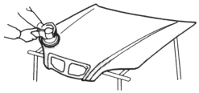
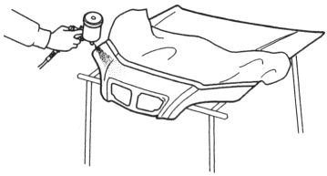

The removal of paint and undercoating by stones chips immediately exposes metal to the atmosphere, causing it to oxidise. The thickness of this oxidation increases if the process continues unchecked. The soft chipping guard primer protects against damage due to the impact of such objects.
Sectional View of Paint Coats:
| Top coat |
| Intermediate coat
+ Chipping guard primer |
| Electrodeposition of primer |
| Base metal |
- The soft chipping guard primer coat is applied over the E.D. (Electrostatically Despotised) primer. It is followed by guide coating and top coating.
- The soft chipping guard primer produces a smooth surface when dry. It should be sprayed so the thickness of the protective film is 20 microns.
Basic Rules for Repairing a Soft Chipping Guard Primer Coat:
- Soft chipping guard primer coat is then applied to the most susceptible area (see page 5-25).
- Spray the primer surface (2-part urethane primer surfacer) on the soft chipping guard primer coating areas when you replaced parts using soft chipping guard primer coat.
|
|
 WARNING
WARNING
- Sanding the replacement part.
NOTE:
- Do not oversand the edges or cornres of the part.
- Do not expose base metal.
| Use a double action sander and #400 disc sandpaper. |

- Air blowing/degreasing
Use alcohol, wax and grease remover. - Making
Use masking tape and paper. - Spraying primer surface
- Spray 4~5 coats to get 20 microns of thickness.
One coat deposits 5~7 microns - Do not try to cover the surface with one heavy coat.
Apply several thin coats.
|

- Drying
After spraying primer surface, allow 7~10 minutes of drying time, then force dry it with infrared lamps or an industrial dryer. - Polishing
Check the primer surface has dried thoroughly, then sand the primer surface.Use a double action sander and #400~#600 disc sandpaper. - Intermediate coating and top coating
Refer to pages 6-8 to 6-10 of this manual for the painting procedure.